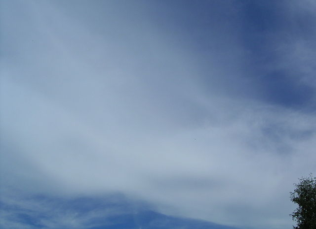
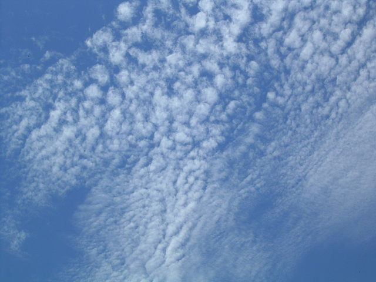

Cirrus clouds form so high up in the atmosphere it's too cold for liquid water, so they're made up of ice crystals – that's why they're so thin and wispy. Sometimes, the wind blows individual cirrus elements downstream, forming ‘mare's tails’. Cirrus can produce precipitation in the form of ice crystals that evaporate long before they hit the ground, but they can also be one of the earliest signs of an approaching storm system.
Cirrus clouds can grow together and form a sheet of cirrostratus. These clouds are also made from ice crystals and can produce some really cool optical effects, like a halo around the sun. The sun is also how you can tell cirrostratus and altostratus apart – through altostratus, the sun just looks like a diffuse glow; but it's pretty easily visible through cirrostratus.
Cirrocumulus form in patches like this. You can tell cirrocumulus from altocumulus by the size of the individual ‘cloudlets’ – if they're bigger than your thumbnail held at arm's length, they're altocumulus; if they're smaller, they're cirrocumulus.
{kind=link}
{kind=link}
{kind=link}